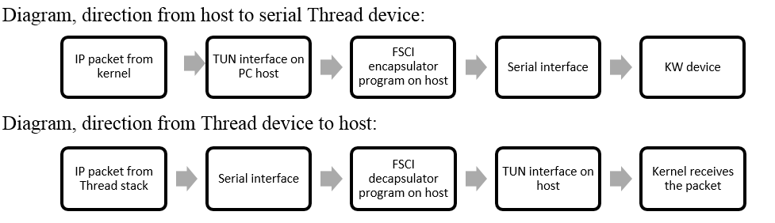

The Kinetis Thread stack implements a serial Tunnel media interface which can be
used to exchange FSCI encapsulated IPv6 packets with a host system. First, ensure that the
macro THR_SERIAL_TUN_ROUTER is enabled in the project
file:middleware\wireless\nwk_ip_<ver>\examples\host_controlled_device\config\config.h
#define THR_SERIAL_TUN_ROUTER 1
and
then select the appropriate Neighbor Discovery (ND) setting for your setup in
app_serial_tun.h: ND host (default), ND router or disabled:
#define THR_SERIAL_TUN_ENABLE_ND_HOST TRUE
#define THR_SERIAL_TUN_ENABLE_ND_ROUTER FALSE
With ND turned off, the communication is network layer (layer-3) only (TUN mode). With ND turned on, link layer (layer-2) is also enabled and frames include an Ethernet header (TAP mode).
Note: Note that a Serial-TUN enabled device advertises itself as a default router
for prefix FD01::/64 (first 64 bits of THR_SERIAL_TUN_DEFAULT_ADDRESS) when
ND is turned off. When multiple Serial-TUN capable nodes coexist in the same Thread network,
routing loops may occur if packets have either the source or destination address from this
prefix range. To fix this, either change THR_SERIAL_TUN_DEFAULT_ADDRESS and
ensure this is unique throughout your setup or have only one Serial-TUN capable device in the
network.
To provide connectivity to the host, there are 2 components needed: the TUN/TAP kernel
module, which allows the operating system to create virtual interfaces and a program that
knows to encapsulate/decapsulate IP packets to/from FSCI/THCI.
Figure 1. Host-to-serial and Thread-device-to-host